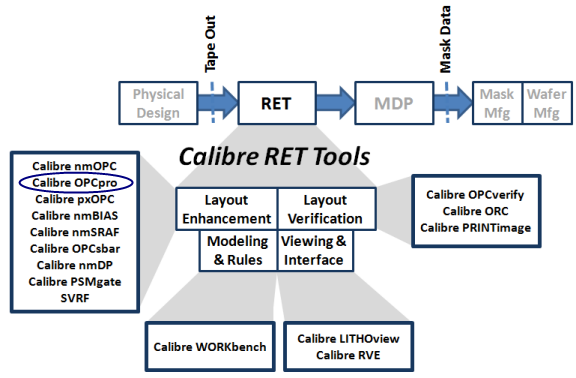

Both Calibre
OPCpro and Calibre nmOPC are fully integrated with the complete
set of Calibre RET tools. Calibre OPCpro, Calibre ORC, Calibre PRINTimage
and Calibre® OPCverify™ provide
sparse OPC and OPC verification capabilities in an integrated flow.
Together with Calibre® nmDRC™, Calibre® OPCsbar™, and Calibre® FRACTURE, a complete hierarchical flow
can be built on the Calibre platform.
Figure 1. Complete Process Flow on the
Calibre Platform
Calibre OPCpro and Calibre nmOPC are similar
products. The appropriate one to use depends on critical dimensions
and pattern density. Generally, Calibre OPCpro is preferred for
processes at or above 65 nm and for half-pitch processes above 45
nm.